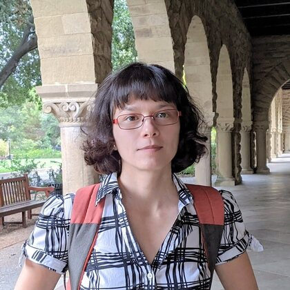
Rika Antonova
University of Cambridge
Full-day workshop at the Conference on Neural Information Processing Systems (NeurIPS) 2026
Large-Scale Learning in Creating Better Systems
December 12–13, 2026 • Paris, France • In person
Automatic design discovery is one of the most significant applications of AI — yet one frontier remains underexplored in the NeurIPS community: the co-design of physical systems together with their controllers, where a structure must be not only sound but also paired with a control policy that fully exploits it.
Such problems recur across remarkably diverse domains — aerodynamic forms, robots, and electronic circuits — and are increasingly tractable through shared AI methods such as physics-informed diffusion, deep generative design, and differentiable simulation. This workshop unites researchers working on AI-driven design for physical and embodied systems (rather than materials) to surface these methodological overlaps and turn them into starting points for cross-community collaboration.
| Time | Session |
|---|---|
| 09:00-09:15 | Opening Remarks. Introduction to Co-Design at Scale. |
| 09:15-11:15 | Morning Talks — Block 1. Four 30-minute talks. |
| 11:15-12:15 | Morning Poster Session & Coffee Break. |
| 12:15-13:15 | Morning Talks — Block 2. Two 30-minute talks. |
| 13:15-14:15 | Lunch Break. |
| 14:15-15:15 | “Hot Takes” Debate. Algorithms vs. Physics in the Reality Gap. |
| 15:15-16:45 | Afternoon Talks — Block 3. Three 30-minute talks. |
| 16:45-17:30 | Afternoon Poster Session & Coffee Break. |
| 17:30-17:45 | Closing Remarks & Best Paper Awards. |
These speakers have agreed to be listed for the proposal; final in-person logistics will be reconfirmed after workshop acceptance.

University of Cambridge
Chalmers University
IT University of Copenhagen / Sakana AI
University of Liverpool
TU Delft
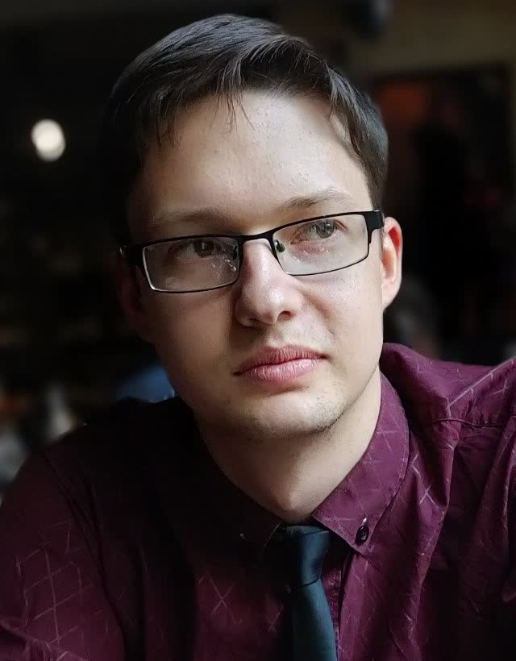
Vrije Universiteit Amsterdam
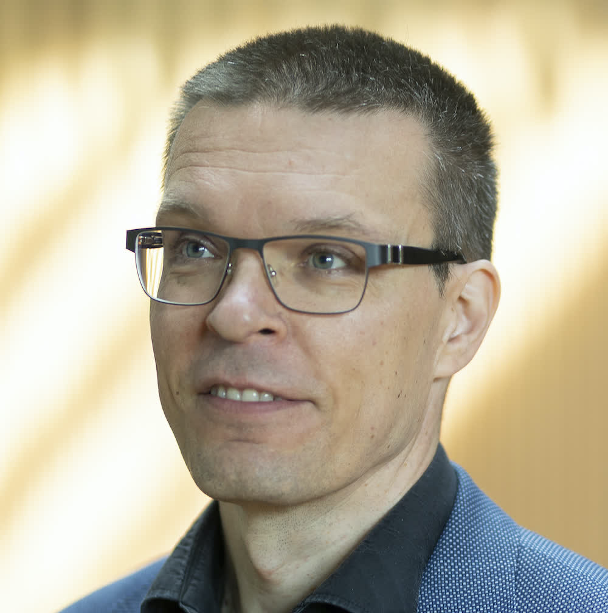
Aalto University
University of Alberta
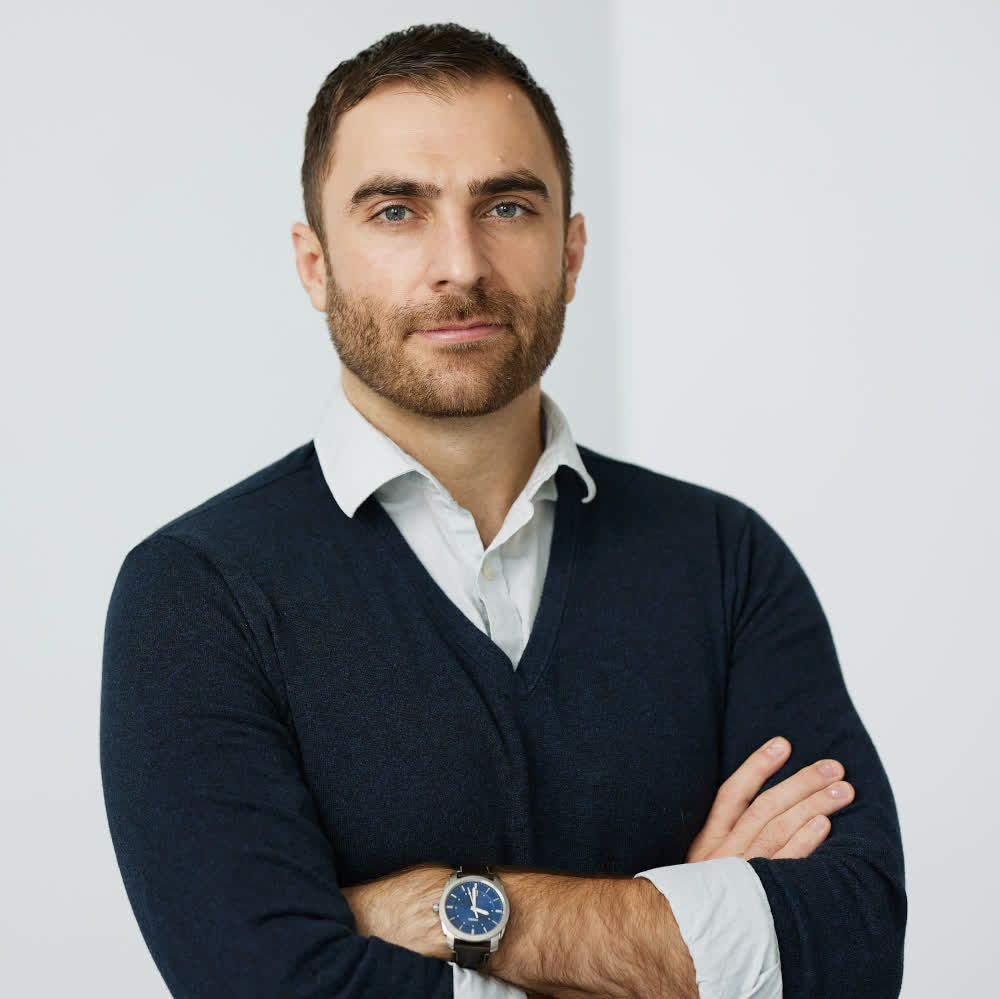
Université de Montréal
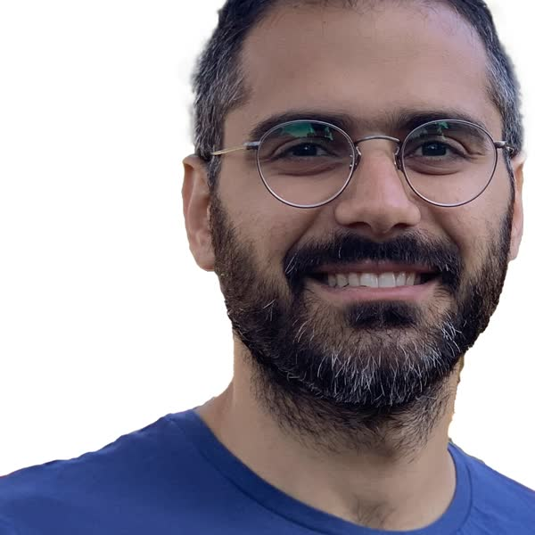
American University of Beirut
We invite extended abstracts (up to 4 pages, excluding references) on early-stage work, position papers, or recent breakthroughs in algorithmic co-design.
Topics include co-design frameworks (DRL, multi-agent RL, constrained bilevel optimization); differentiable simulation and robotics (differentiable physics, neural cellular automata, morphology optimization); hardware–software co-optimization (logic synthesis, accelerator design, quantum compiler routing); and infrastructure and network topology (GNNs for dynamic routing, smart-grid optimization, sensor and perception co-design).
Submission details, reviewing criteria, and deadlines will be posted after workshop acceptance.
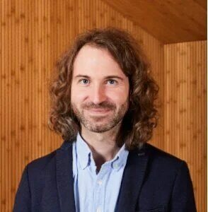
Vrije Universiteit Amsterdam
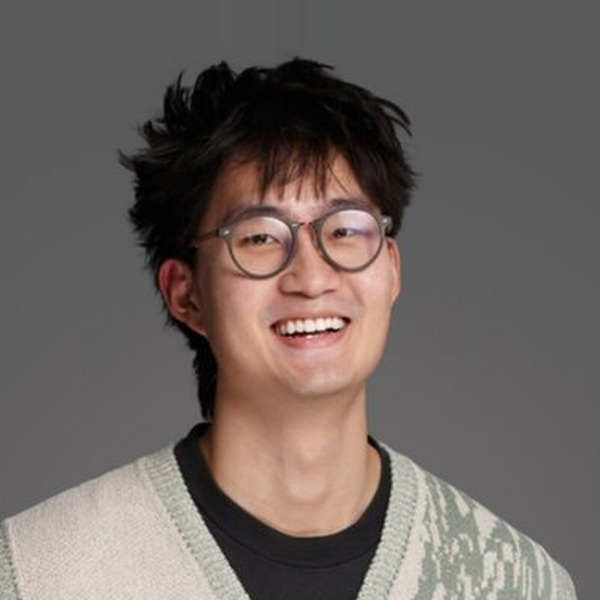
University of Warsaw
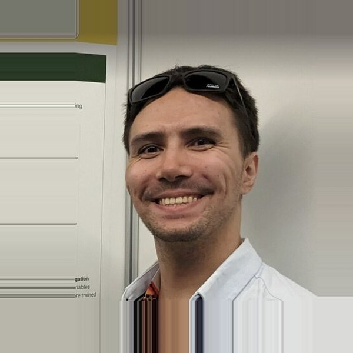
University of Alberta & Vrije Universiteit Amsterdam
All3
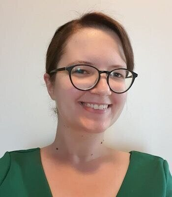
Vrije Universiteit Amsterdam
Vrije Universiteit Amsterdam
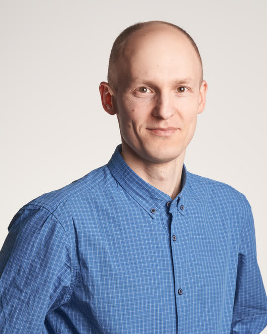
University of Warsaw
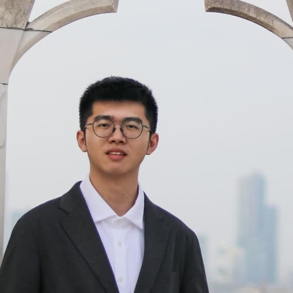
Tsinghua University